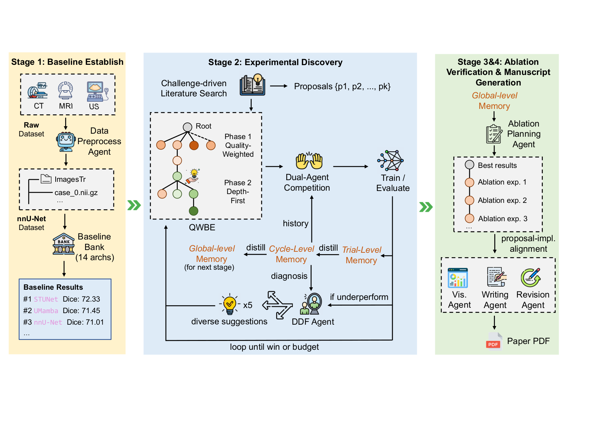
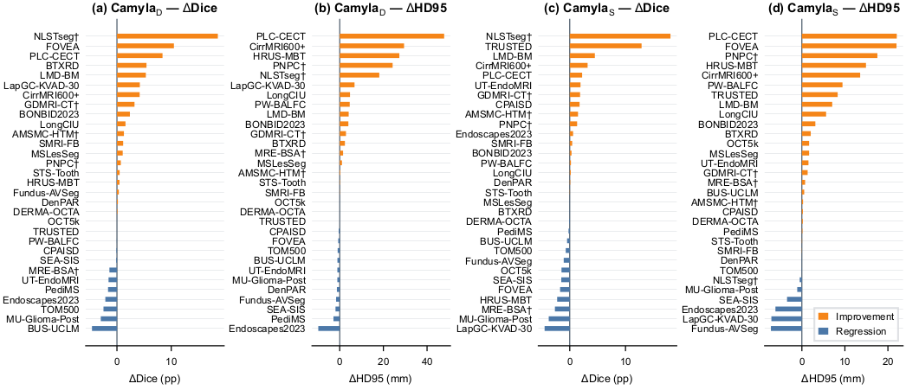
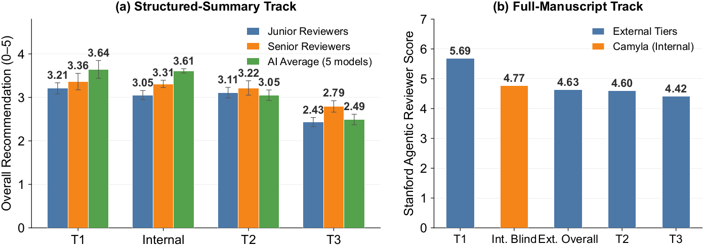
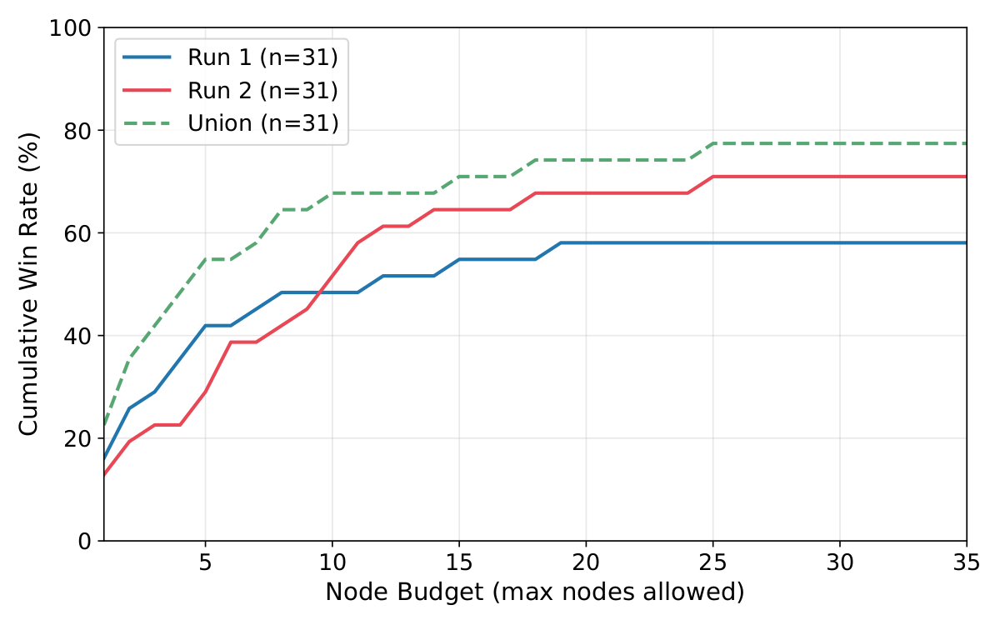
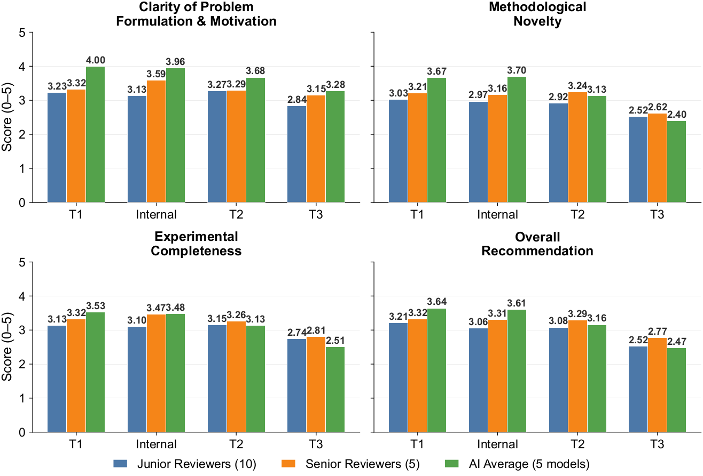
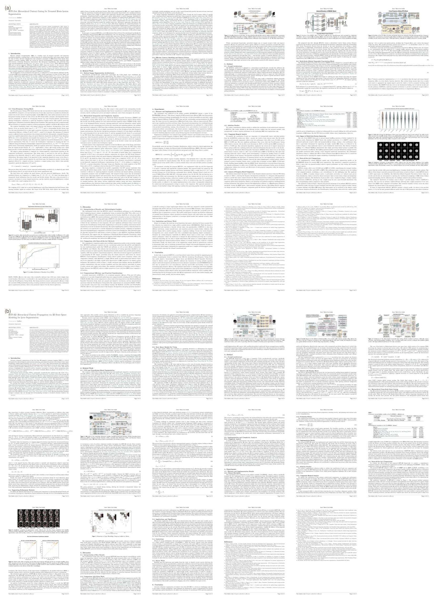

Camyla: Scaling Autonomous Research in
Medical Image Segmentation
Headline Results
28 days · zero human intervention · one 8-GPU cluster.
- 40 complete manuscripts written end-to-end (literature → proposal → experiments → LaTeX paper).
- Cost-efficient: only $20–30 per paper in LLM API spend.
- Beats the strongest per-dataset baseline — chosen from 14 established architectures including nnU-Net — on 24 of 31 datasets under identical training budgets.
- CamylaBench: contamination-free benchmark of 31 datasets, built exclusively from 2025 publications.
- Stronger long-horizon orchestration on the experiment stage. Driven by cost-efficient backends (GLM-4.7 + MiniMax-M2.5), Camyla outperforms AI Scientist, autoresearch Claude Code (Opus 4.6), and autoresearch Codex (GPT-5.4-xhigh) on execution success, completion rate, and fidelity to the original proposal.
Abstract
We present Camyla, a system for fully autonomous research within the scientific domain of medical image segmentation. Camyla transforms raw datasets into literature-grounded research proposals, executable experiments, and complete manuscripts without human intervention. Autonomous experimentation over long horizons poses three interrelated challenges: search effort drifts toward unpromising directions, knowledge from earlier trials degrades as context accumulates, and recovery from failures collapses into repetitive incremental fixes.
To address these challenges, the system combines three coupled mechanisms: Quality-Weighted Branch Exploration for allocating effort across competing proposals, Layered Reflective Memory for retaining and compressing cross-trial knowledge at multiple granularities, and Divergent Diagnostic Feedback for diversifying recovery after underperforming trials.
Camyla is evaluated on CamylaBench, a contamination-free benchmark of 31 datasets constructed exclusively from 2025 publications, under a strict zero-intervention protocol across two independent runs within a total of 28 days on an 8-GPU cluster. Across the two runs, Camyla generates more than 2,700 novel model implementations and 40 complete manuscripts, surpassing the strongest per-dataset baseline selected from 14 established architectures, including nnU-Net, on 22 and 18 of 31 datasets respectively (union: 24/31). Senior human reviewers score the generated manuscripts at the T1/T2 boundary of contemporary medical imaging journals. Relative to automated baselines, Camyla outperforms AutoML and NAS systems on aggregate segmentation performance and exceeds six open-ended research agents on both task completion and baseline-surpassing frequency.
System Overview
Camyla operates as a three-phase idea-generation pipeline (literature search → challenge extraction → proposal scoring) followed by a three-stage experiment loop (Stage 1: baseline replication; Stage 2: creative research with N-way model competition; Stage 3: ablation), capped by a paper-writing agent that drafts, plots, cites, and compiles a publication-ready LaTeX manuscript.

Quantitative Results

Per-dataset Dice improvement of Camyla over the strongest of 14 baseline architectures across CamylaBench.

Manuscript quality: senior human reviewers and AI evaluators both place Camyla outputs at the T1/T2 boundary.

Win rate scales gracefully with compute budget, validating Camyla's QWBE search policy.

Reviewer ratings across novelty, soundness, clarity, and presentation dimensions.
Manuscript Quality — Double-Blind Evaluation
Camyla-generated manuscripts were mixed with real 2025 publications and judged without reviewers knowing which was AI-written. Four independent panels — 5 senior reviewers, 10 junior reviewers, 5 different AI models, and the Stanford Agentic Reviewer — all place Camyla's output between the T1 and T2 tier of contemporary medical-imaging journals. T1 anchors: IEEE TMI & Medical Image Analysis; T2 band: JCR Q1 medical-imaging journals.
| Tier | Journals | Papers | Representative venues |
|---|---|---|---|
| T1 (top-tier) | 2 | 10 | IEEE Transactions on Medical Imaging; Medical Image Analysis |
| T2 (JCR Q1) | 7 | 35 | IEEE Journal of Biomedical and Health Informatics; Artificial Intelligence in Medicine; et al. |
| T3 | 9 | 45 | International Journal of Computer Assisted Radiology and Surgery; Biomedical Physics & Engineering Express; et al. |
| Total | 18 | 90 |
Qualitative Segmentation Examples

Predictions from Camyla-generated models compared against the strongest baseline across CamylaBench tasks.
Resources
- Camyla — main pipeline (literature → proposals → QWBE experiments → paper writer).
- CamylaNet — segmentation framework on top of nnU-Net v2 with curated CNN / Transformer / state-space backbones; powers Camyla's baseline stage.
- nnPrep — LLM agent that converts arbitrary medical-segmentation datasets into nnU-Net v2 layout.
- CamylaBench — 31 pre-formatted datasets (Google Drive). CamylaTrace-232K trajectories will follow shortly.
- Sample generated papers — 10 end-to-end Camyla manuscripts (PDFs, no hand-editing).
Paper
BibTeX
@misc{gao2026camyla,
title = {Camyla: Scaling Autonomous Research in Medical Image Segmentation},
author = {Gao, Yifan and Li, Haoyue and Yuan, Feng and Gao, Xin and Huang, Weiran and Wang, Xiaosong},
year = {2026},
eprint = {2604.10696},
archivePrefix = {arXiv},
primaryClass = {cs.AI}
}